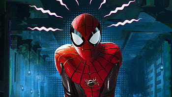
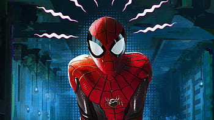

The origins story of Peter Parker Spiderman
Peter Parker was a high school student living with his Aunt May and Uncle Ben in Queens, New York. One day, while attending a science exhibit, he was bitten by a radioactive spider. The spider's bite gave Peter incredible strength, agility, enviromental awareness, and the ability to wall climb like a spider. Initially using his powers for personal gain and fame, Peter neglected to stop a thief who later killed his Uncle Ben. Fueled by guilt and remorse, Peter vowed to use his powers to help others and fight crime as the superhero Spiderman, carrying on his uncles legacy of "with great power, comes great responsibility."
To find out more about Spiderman review the table below!: